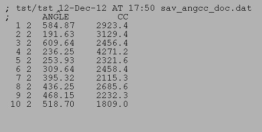

| .OPERATION: | DOC SPLIT | ; Alternately split document file into two |
| .INPUT DOCUMENT FILE: | sav_doc_angcc_1 | ; Doc file (input) |
| .OUTPUT DOCUMENT FILE: | doc_split_1 | ; First split doc file (output) |
| .SECOND OUTPUT DOCUMENT FILE: | doc_split_2 | ; Second split doc file (output) |
| INPUT DOC FILE |
|---|
|  |
| sav_angcc_doc.jpg |
| FIRST OUTPUT DOC FILE | SECOND OUTPUT DOC FILE |
|---|---|
| docsplit_1 | docsplit_2 |